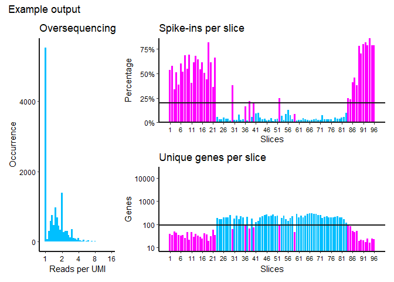

A quick quality check for tomosequencing data
Overview
The goal of TomoQC is to provide a quick, simple quality control to assess the quality of a tomosequencing sample. Read, UMI, and Transcript count tables are required for the function to run.
Installation
TomoQC is available to install from github:
# install.packages("devtools") devtools::install_github("erikschild/TomoQC")
Example
The package includes a 1000 gene dummy dataset which gives an idea of how output may look. Note that in a real experiment, the data input would be based on many more genes.
Oversequencing
Plots a histogram of UMIs/reads per gene. Any occurrence of a value >1 indicates multiple reads originating from the same RNA molecule. The further the peak of the histogram shifts to the right, the more saturated sequencing depth is.
Spike-ins
Plots the percentage of all reads in a column mapping to ERCC spike-ins. A high percentage likely means no sample was present, and vice versa (lower = better).
Unique genes
The amount of unique mapped genes per column. More unique genes are expected to map where sample was present (higher = better).
library(TomoQC) example <- tomo_quality(transcripts = example_data$ex_transcripts, reads = example_data$ex_reads, umis = example_data$ex_barcodes, cutoff_spike = 20, cutoff_genes = 90, plot_title = "Example output")

example #> # A tibble: 96 x 4 #> Slice Genes Spike_ins_percentage Wormslice #> <dbl> <dbl> <dbl> <chr> #> 1 1 38 53.7 not_worm #> 2 2 34 57.8 not_worm #> 3 3 49 33.5 not_worm #> 4 4 43 51.0 not_worm #> 5 5 34 38.8 not_worm #> 6 6 33 60.4 not_worm #> 7 7 34 51.8 not_worm #> 8 8 25 68.4 not_worm #> 9 9 47 54.7 not_worm #> 10 10 22 69.1 not_worm #> # ... with 86 more rows